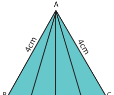
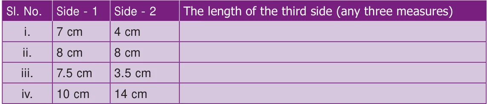
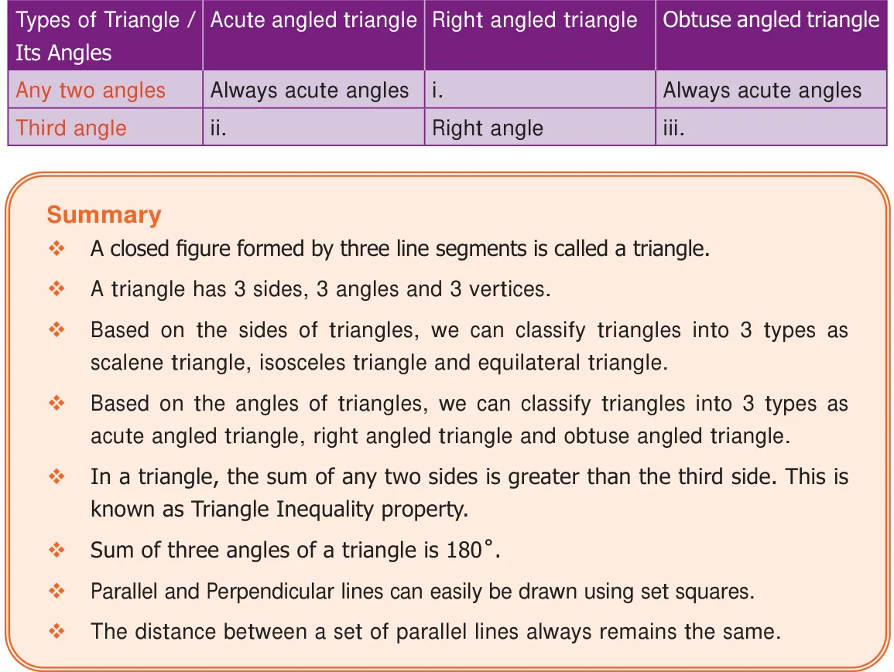

- 9.If one angle of an isosceles triangle is 70 , then find the possibilities for the other two
angles.
- 10.Which of the following can be the sides of an isosceles triangle?
- a)6cm, 3cm, 3cm b) 5cm, 2cm, 2cm c) 6cm, 6cm, 7cm d) 4cm, 4cm, 8cm
- 11.Study the given figure and identify the following triangles.

- (a)equilateral triangle (b) isosceles triangles
- (c)scalene triangles (d) acute triangles
- (e)obtuse triangles (f) right triangles
- 12.Two sides of the triangle are given in the table. Find the third side of the triangle.

- 13.Complete the following table:
